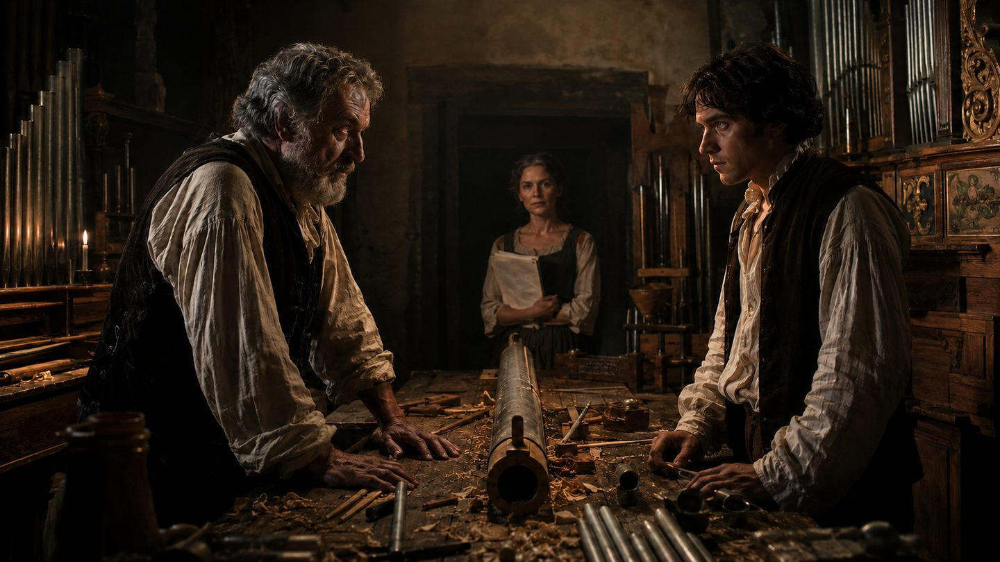
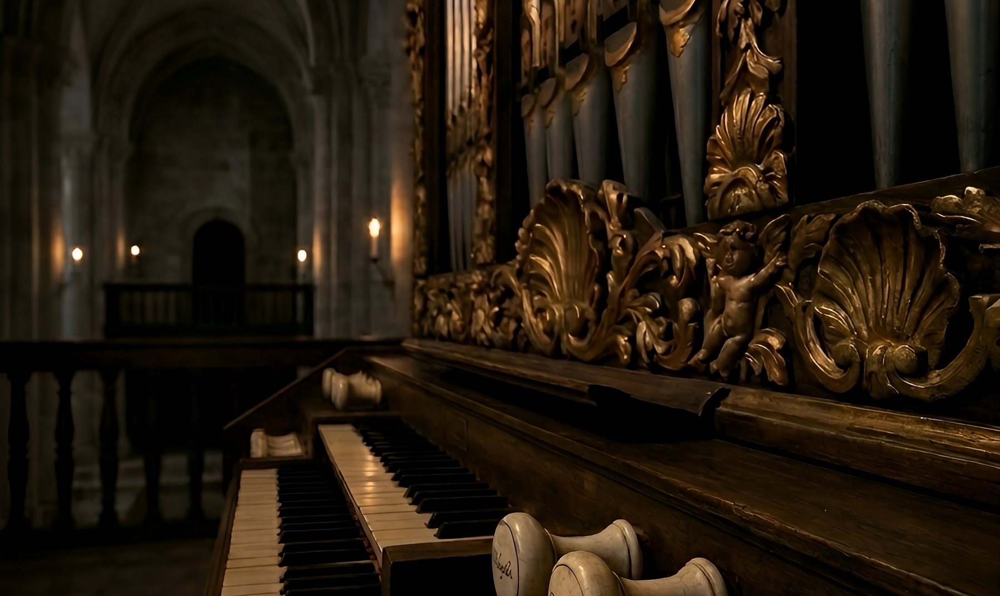
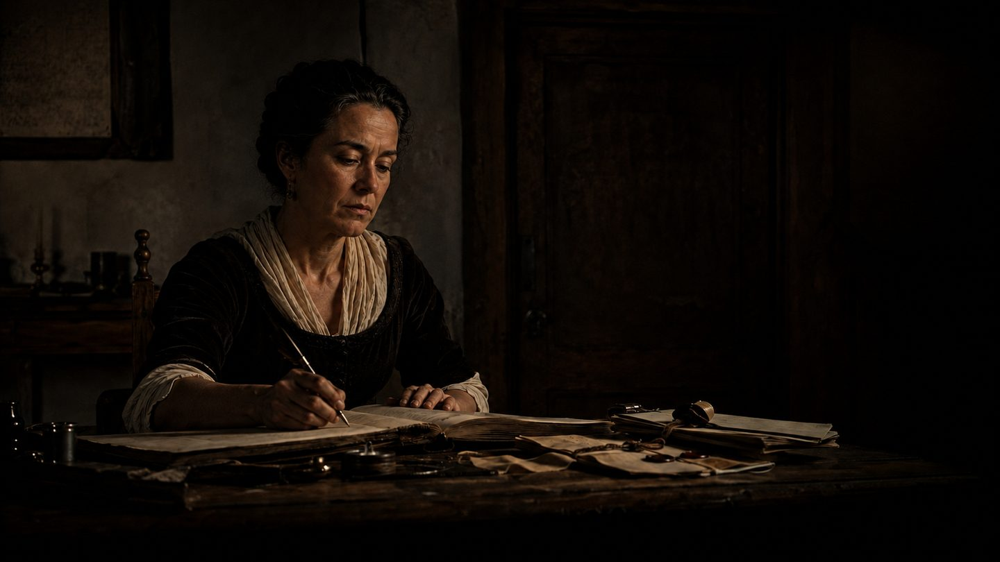
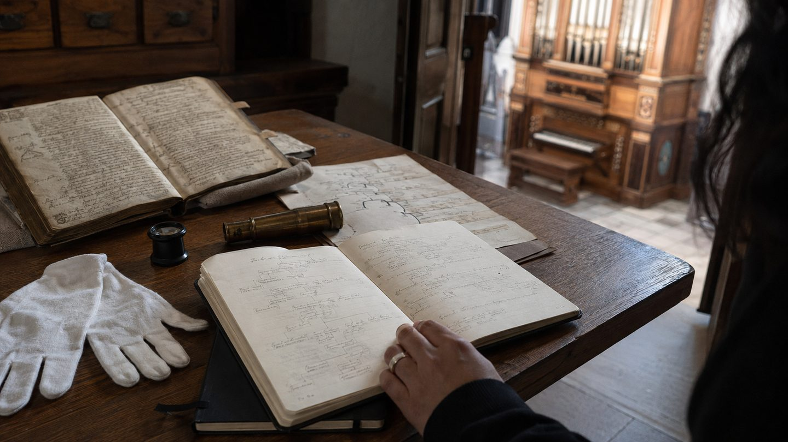
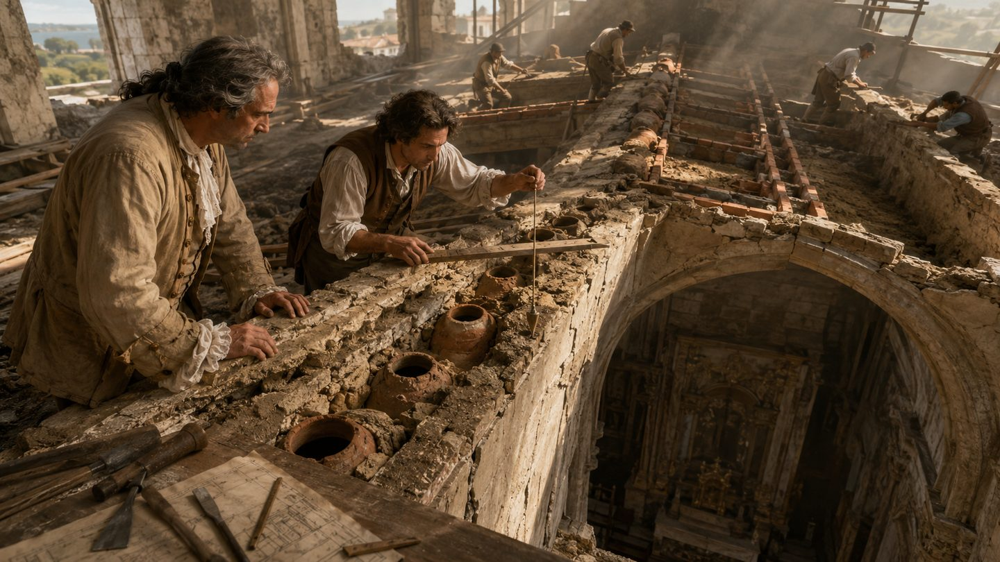

1762
El taller
Braga. Tomás hereda el mejor taller del Reino y un órgano que su padre dejó sin acabar, con instrucciones que se anulan unas a otras.

Braga, 1762. Tomás de Almada hereda el mejor taller del Reino de Portugal y un órgano por acabar — con un registro que nadie ha oído jamás: cuarenta y nueve tubos que cantan como gargantas. Su padre dedicó las últimas horas de su vida a hacerle imposible acabarlo: le dejó instrucciones que se anulan unas a otras, y una caja de cedro que nunca debe abrir.
En la casa de los Almada hay una mujer que no habla. Al cabo de veinticinco años de servicio tiene ocho cartas escritas y nunca ha entregado ninguna. Todavía.
En 2025, Inês Salgueiro recibe el encargo de restaurar el instrumento — sellado desde su inauguración. Pero algo no encaja. Pesa los tubos y las cuentas no cuadran.
Inês tiene en las manos la prueba de cuarenta y nueve voces robadas. ¿Qué se hace con una obra maestra cuando se descubre que no fue solo pagada con vidas — fue hecha de ellas?


1762
Braga. Tomás hereda el mejor taller del Reino y un órgano que su padre dejó sin acabar, con instrucciones que se anulan unas a otras.

2025
Inês Salgueiro abre un instrumento sellado desde su inauguración. Pesa los tubos y las cuentas no cuadran.
el registro central
Cuarenta y nueve tubos, del más grave al más agudo — el registro que nadie ha oído jamás. En el archivo del taller, cada uno lleva una fecha al lado de un precio.
Recorra los tubos, del más grave al más agudo. En un registro de ocho pies cada tubo responde a la tecla de su propio nombre — y el más grave mide ocho pies, dos metros y medio de estaño.
El tratado de Dom Bedos, los órganos de Mafra, la anatomía en cera y los vasos acústicos: las referencias reales de la Nota del Autor, con imágenes históricas y fuentes. Las tres ilustraciones del método están tras un aviso de spoilers. Página en portugués.

Gonçalo de Azevedo es ingeniero civil, con un recorrido que atraviesa la construcción, los idiomas y las ciencias. Viaja, dibuja, pinta y lee con la misma curiosidad disciplinada. Vox Humana, su primera novela, nace de ese cruce entre rigor técnico y fascinación por lo que queda sin decir.
Cada enlace abre el mercado de Amazon del idioma correspondiente. Cualquier librería puede pedir la edición impresa por su ISBN.
Ficha bibliográfica de la edición impresa portuguesa, para catalogación y adquisición. Las ediciones en inglés, español, francés y alemán tienen ISBN propio, indicado más abajo.
Es una novela histórica de tono gótico sobre la construcción de un órgano de tubos en Braga, en el siglo XVIII, y el descubrimiento, en 2025, de un secreto escondido dentro del instrumento desde hace más de 250 años. Es, a la vez, una historia de herencia, de silencio y del precio real de una obra maestra.
No — es ficción, pero con rigor histórico y organológico genuino sobre la construcción de órganos ibéricos del siglo XVIII.
Ficción histórica con tono gótico y estructura de misterio — dos líneas temporales que se responden: el taller de los Almada, en Braga, a lo largo de la segunda mitad del siglo XVIII, y la restauración del órgano en el presente.
Portugués, inglés, español, francés y alemán, en ebook y tapa blanda.
Es una novela autónoma (standalone).
La edición impresa portuguesa tiene el ISBN 978-989-34-0206-1. Las ediciones en inglés, español, francés y alemán tienen ISBN propio — la lista completa está en Para bibliotecas y catalogadores.
Gonçalo de Azevedo es el seudónimo de un ingeniero civil portugués para quien esta es su primera novela publicada.
Las cinco ediciones existentes son autoedición. No se ha cedido ningún derecho subsidiario: los derechos de traducción a otros idiomas, de audiolibro, de adaptación teatral y audiovisual están disponibles, en todos los territorios.